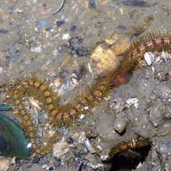
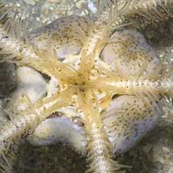
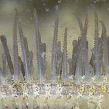
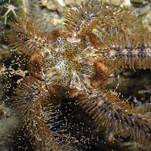
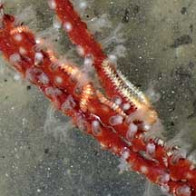
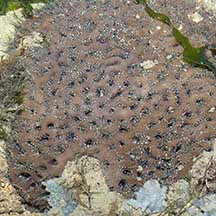
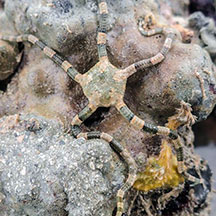
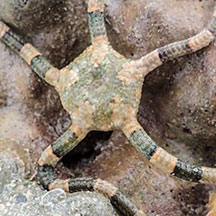

|
|
| brittle stars text index | photo index |
| Phylum Echinodermata > Class Stellaroida > Subclass Ophiuroidea |
| Brittle
stars Subclass Ophiuroidea updated Apr 2020
Where seen? Brittle stars are the most common echinoderms on our shores but are rarely seen as they shun the light and are more active at night. Often, all that can be seen of a brittle star are its skinny, spiny arms! Ones with longer arms may be seen hiding among coral rubble. Tiny ones shelter under rocks, beneath the sand and in even on other animals such as sponges. What are brittle stars? Brittle stars belong to Phylum Echinodermata and Subclass Ophiuroidea which has about 2,100 known species. This makes Ophiuroidea the largest group of echinoderms. About 300 brittle star species are found in shallow tropical waters. Basket case: Included in Class Ophiuroidea are the basket stars (Suborder Euryalina) that have branched arms and thus appear basket-like. Large ones are generally found in deeper water, although small ones have been encountered on the intertidal. Features: Brittle stars are related to sea stars but belong to a different class and have somewhat different features and habits. Like other echinoderms, brittle stars are symmetrical along five axes, have spiny skin and tube feet. An armful: A brittle star is almost all arms. Its central disk is usually only a few centimeters wide while its thin, flexible arms can be very long. The arms are made up of large, well developed ossicles (plates made mostly of calcium carbonate). The ossicles are connected together like a vertebrate with ball-and-socket joints. A brittle star lengthens its arms by adding ossicles where the arm joins the central disk. Sometimes confused with bristleworms. Here's more on how to tell them apart. Feather stars may also appear similar but they usually have 10 or more arms. What do they eat? Many brittle stars feed on detritus, using their arms to gather this from the surface or to filter these out of the water. Unlike sea stars, a brittle star doesn't have a groove on the underside of its arms. Brittle stars have only one opening on their underside that functions as both a mouth and anus! Unlike sea stars, the digestive system of brittle stars doesn't extend into their arms. A brittle star's mouth is surrounded by jaws made up of a circle of five large toothed plates that meet in the middle. Unlike sea urchins, the jaws cannot be extended outwards. Tiny tube feet emerge from holes between the ossicles in the arms. These may 'wipe off' food particles stuck on the hooked or mucous-coated spines, or collect particles off the surface, and pass these on to the central mouth. Other brittle stars are carnivores that use their arms to sweep tiny creatures to their mouths. Yet others are scavengers, nibbling on their food with their jaws or using the tube feet near their mouth. Some brittle stars use their tube feet to sense chemicals released by their food. |
 Often all that is seen of a brittle star are its arms sticking out of a hiding place. Changi, Jan 04 |
 Underside of a Blue lined brittle star. Chek Jawa, Aug 05 |
 Close up of tubefeet on arms Pulau Sekudu, Jun 06 |
| Falling apart: As its name suggests,
a brittle star has a tendency to fall apart. It may purposely throw
off an arm when threatened. So please don't handle brittle stars. The dropped arm may continue to wriggle to distract the predator while the brittle star escapes. The brittle star is able to do this because the ossicles in its arms are connected by mutable connective tissue. The brittle star can rapidly change the consistency of this tissue from rock hard to almost liquid. The arm eventually re-grows, but it can take months before it is fully restored. Brittle star babies: Most brittle stars have separate genders and are usually either male or female. Sperm or eggs are stored in pouch-like chambers in the central disk. These are usually released simultaneously into the water. This usually happens at night. Some spawning brittle stars assume a push-up posture, raising the central disk into the water currents by standing on the tips of their arms. Brittle stars undergo metamorphosis and their larvae look nothing like their adults. The form that first hatches from the eggs are bilaterally symmetrical and free-swimming, drifting with the plankton. They eventually settle down and develop into tiny brittle stars. Some brittle stars brood their eggs. |
 A Blue lined brittle star possibly releasing eggs Pulau Sekudu, Jul 04 |
 Basket start on a Flowery soft coral. Beting Bronok, Jul 13. |
 Sometimes seen in large numbers. Chek Jawa, Aug 07 |
| Star-spangled sponges: Tiny brittle
stars (1-2cm with arms) often live inside sponges.
Look closely at the holes of a sponge and you might see their little
arms sticking out. They may also be found living with corals and even
other echinoderms. One tiny brittle star Ophiosphaera insignis lives near the mouth of the sea urchin Diadema setosum. Here,
the brittle star finds safety and food that is gathered by the sea
urchin. Another tiny brittle star Ophiomaza
cacaotica shelters near the mouth of feather
stars. Yet others cling to the branches of gorgonians. Stars come out at night: Brittle stars are plentiful but seldom seen. They have many predators, so brittle stars usually only come out at night. Creatures that snack on brittle stars include fish, crabs, hermit crabs, mantis shrimp and even sea stars and other brittle stars. |
 This brittle star lives only in feather stars! Raffles Lighthouse, Jul 06 |
 Tiny colourful brittle stars may live on a variety of other animals. East Coast Park, Jun 06 |
 Tiny in-a-sponge brittle stars live in this sponge. Pulau Sekudu, Jul 05 |
| Speedy stars: Brittle stars are the fastest-moving echinoderms!
While sea stars use their tube feet to move slowly, brittle stars
use their highly flexible, spiny arms instead. Their arms move in
a snaky manner, 'Ophiuroidea' means 'snake-like'. To move, a brittle star generally gets a grip on something with one or two spiny arms. These then pull while the remaining arms push or trail behind. Some brittle stars may also 'swim' by vigorously rowing their highly flexible arms, similar to the breast-stroke! Human uses: Brittle stars are not used for human purposes. |
 |
| Brittle stars on Singapore shores |


| Other unidentified brittle stars on Singapore shores |
 Beting Bemban Besar, Jul 20 Photo shared by Vincent Choo on facebook. |
 |
| Order
Ophiuroidea recorded for Singapore Fujita T. & Irimura S. Preliminary list of ophiuroids (Echinodermata: Ophiuroidea) collected from the Johor Straits, in red are those listed among the threatened animals of Singapore from Davison, G.W. H. and P. K. L. Ng and Ho Hua Chew, 2008. The Singapore Red Data Book: Threatened plants and animals of Singapore. **from WORMS.
BRITTLE STARS
BASKET STARS
|
Links
|